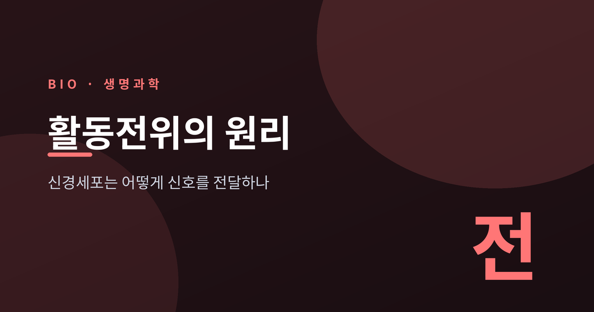
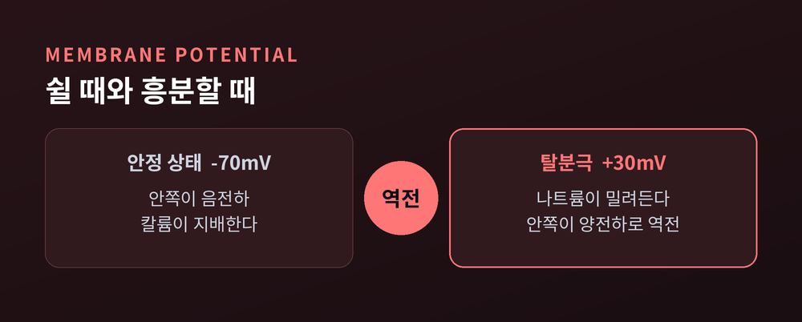
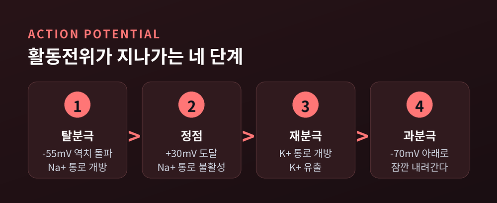
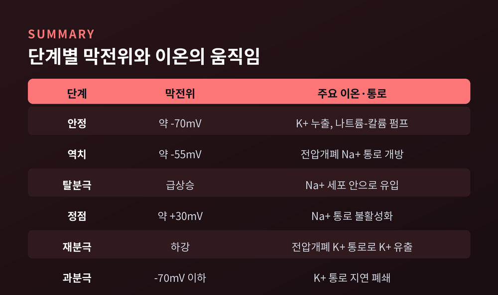
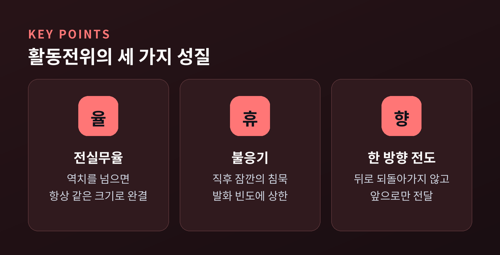
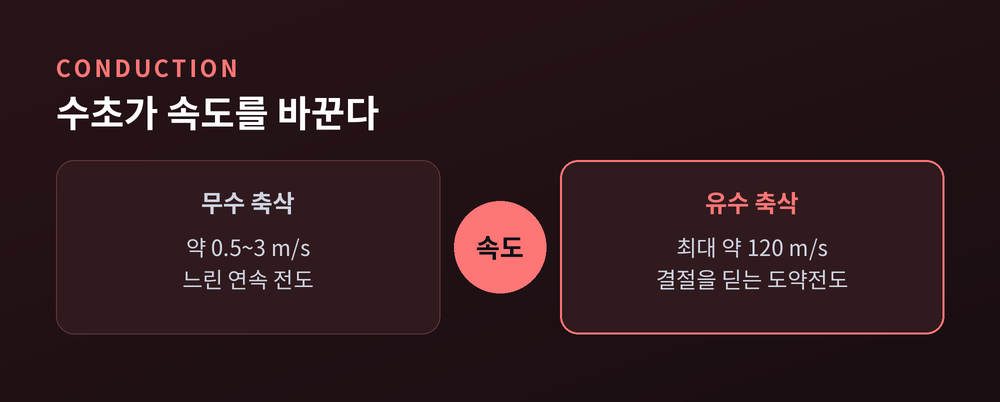

이번 글에서는 신경세포가 신호를 만들고 전달하는 원리를 정리해 보겠습니다.
손끝을 데었을 때 우리가 순식간에 손을 떼는 그 과정이, 세포 안에서는 전기의 언어로 오갑니다.
그 전기 신호의 이름이 활동전위입니다. 어떻게 생기고, 어떻게 퍼지는지 차근차근 살펴보겠습니다.
신경세포는 아무 신호도 보내지 않을 때에도 조용히 준비를 하고 있습니다.
쉬고 있는 뉴런의 세포막 안쪽은 바깥쪽보다 전기적으로 음(-)을 띱니다.
이 전압 차이를 안정막전위라 부르며, 값은 대략 -70mV입니다.
핵심은 이온의 분포입니다.
칼륨(K+)은 세포 안쪽에 많고, 나트륨(Na+)은 바깥쪽에 많습니다.
쉬는 동안 세포막은 칼륨을 훨씬 잘 통과시킵니다.
그래서 칼륨이 농도를 따라 조금씩 밖으로 새어 나가고, 안쪽에는 음전하가 남습니다.
여기에는 두 가지 힘이 함께 작용합니다.
하나는 농도 차이가 만드는 힘이고, 다른 하나는 전하가 서로 끌고 미는 힘입니다.
이 둘이 균형을 이루는 지점에서 막전위가 -70mV 부근에 자리를 잡습니다.
말하자면 안정막전위는 완전한 정지가 아닙니다.
언제든 터질 수 있도록 팽팽하게 당겨 둔 활시위에 가깝습니다.
이 긴장이 없다면, 자극이 와도 세포는 아무 반응을 만들지 못합니다.

이 팽팽한 준비 상태는 저절로 유지되지 않습니다.
나트륨-칼륨 펌프라는 단백질이 끊임없이 일을 합니다.
이 펌프는 ATP 한 분자를 쓸 때마다 나트륨 3개를 밖으로 퍼내고, 칼륨 2개를 안으로 들여옵니다.
3 대 2, 이 어긋난 비율 때문에 세포 안은 조금씩 더 음전하로 기웁니다.
덕분에 나트륨은 밖에, 칼륨은 안에 몰린 상태가 계속 유지됩니다.
이 농도 차이가 곧 에너지 저장고입니다.
펌프가 멈추면 기울기는 무너지고, 뉴런은 더 이상 신호를 만들지 못합니다.
조용해 보이는 이 작업이 사실은 신경 활동의 밑천인 셈입니다.
그래서 세포는 신호를 보내지 않고 쉬는 동안에도 이 펌프를 돌리며 에너지를 씁니다.
자극이 들어오면 막전위가 조금씩 위로 올라갑니다.
그러다 대략 -55mV에 이르면 결정적인 사건이 일어납니다.
이 지점을 역치라 부릅니다.
역치를 넘으면 전압개폐 나트륨 통로가 한꺼번에 열립니다.
이 통로는 막전위의 변화를 감지해 스스로 문을 여닫는 정교한 장치입니다.
밖에 몰려 있던 나트륨이 안으로 밀려들면서 막전위가 급격히 치솟습니다.
음전하였던 안쪽이 순식간에 양전하로 뒤집힙니다.
여기에는 되먹임의 힘이 숨어 있습니다.
통로가 열려 나트륨이 들어오면 막전위가 더 오르고, 그러면 이웃한 통로가 또 열립니다.
한번 시작되면 걷잡을 수 없이 번지는, 폭발에 가까운 반응입니다.
정점은 약 +30mV입니다.
여기서 나트륨 통로는 스스로 닫히고, 이번에는 칼륨 통로가 열립니다.
칼륨이 밖으로 빠져나가면서 막전위는 다시 아래로 내려갑니다. 이것이 재분극입니다.
내려가던 전위는 -70mV를 잠깐 지나쳐 더 낮게 떨어집니다.
칼륨 통로가 닫히는 데 시간이 조금 걸리기 때문입니다.
이 짧은 과분극을 지나고 나면, 세포는 다시 안정막전위로 돌아옵니다.

지금까지 나온 수치와 주역을 한자리에 모아 봅니다.
각 단계마다 어떤 이온과 통로가 움직이는지 보면 흐름이 한눈에 잡힙니다.

값은 교과서마다 조금씩 다르게 적기도 합니다.
안정막전위를 -65mV로 쓰는 자료도 있습니다.
대표값으로 기억해 두되, 범위가 있다는 점은 알아 두시면 좋겠습니다.
활동전위에는 재미있는 성질이 있습니다.
역치만 넘으면 활동전위는 언제나 같은 크기로 완결됩니다.
자극이 두 배 세다고 신호가 두 배 커지지 않습니다.
역치에 못 미치면 아예 일어나지 않습니다.
이것을 전실무율이라 합니다. 전부 아니면 전무라는 뜻입니다.
그렇다면 자극의 세기는 어떻게 표현될까요. 크기가 아니라 발화의 빈도로 전해집니다.
또 하나, 활동전위가 막 지나간 자리는 잠깐 침묵합니다.
나트륨 통로가 아직 회복되지 않아 새 신호를 만들 수 없는 절대 불응기입니다.
조금 지나면 더 강한 자극에 한해 반응하는 상대 불응기가 이어집니다.
이 짧은 침묵 덕분에 신호는 뒤로 되돌아가지 않고 한 방향으로만 흐릅니다.
또한 불응기는 신호가 겹치지 않도록 간격을 지켜 줍니다.
아무리 강한 자극이 몰아쳐도 발화 횟수에 상한이 생기는 이유입니다.
덕분에 신경계는 폭주하지 않고, 신호의 리듬을 안정적으로 유지합니다.

신호는 축삭을 따라 퍼져 나갑니다.
여기서 속도를 끌어올리는 장치가 수초입니다.
수초는 축삭을 감싸는 절연 피막이고, 그 사이 규칙적으로 드러난 틈이 랑비에 결절입니다.
전압개폐 나트륨 통로는 이 결절에만 모여 있습니다.
수초로 덮인 구간은 절연되어 전류가 거의 새지 않습니다.
그래서 활동전위는 결절에서 결절로 건너뛰듯 전달됩니다. 이것이 도약전도입니다.
효과는 극적입니다.
수초가 없는 축삭은 초당 약 0.5~3m로 느리게 전달합니다.
수초가 있는 축삭은 초당 최대 약 120m까지 빨라집니다.
예전엔 신호가 축삭 전체를 하나하나 훑고 지나갔습니다.
지금은 결절만 딛고 도약하니 훨씬 빠르고, 이온도 적게 써서 에너지까지 아낍니다.

전기 신호가 축삭 끝에 닿으면, 뉴런 사이의 좁은 틈을 건너야 합니다.
이 틈이 시냅스이고, 폭은 약 20nm에 불과합니다.
신호가 도착하면 칼슘(Ca2+) 통로가 열려 칼슘이 들어옵니다.
칼슘은 신호가 되어, 신경전달물질을 담은 소포를 세포막과 융합시킵니다.
소포가 열리면 신경전달물질이 시냅스 틈으로 쏟아집니다.
방출된 물질은 건너편 뉴런의 수용체에 붙어 새 전기 신호를 일으킵니다.
이때 신호는 상대를 흥분시킬 수도, 반대로 가라앉힐 수도 있습니다.
어떤 신경전달물질이 어떤 수용체를 만나느냐에 따라 결과가 달라지기 때문입니다.
전기에서 화학으로, 다시 전기로. 신호는 이렇게 언어를 바꿔 가며 이어집니다.
한 가지 방식만 고집하지 않는 이 유연함이 신경계의 힘이라고 생각합니다.
물론 아직 완전히 밝혀지지 않은 영역도 많습니다.
같은 전달물질이 상황에 따라 다르게 작동하는 까닭은, 지금도 활발히 연구되고 있습니다.
끝으로 한 마디만 더 드리겠습니다.
활동전위의 원리는 결국 하나의 문장으로 압축됩니다.
"기울기를 저장해 두었다가, 역치를 넘는 순간 한꺼번에 터뜨린다."
우리가 무언가를 느끼고 움직이는 지금 이 순간에도, 몸속에서는 수많은 활시위가 조용히 당겨졌다 놓이고 있습니다.
그 미세한 전기의 파도를 떠올려 보신다면, 생각한다는 일이 조금은 다르게 다가올지도 모르겠습니다.